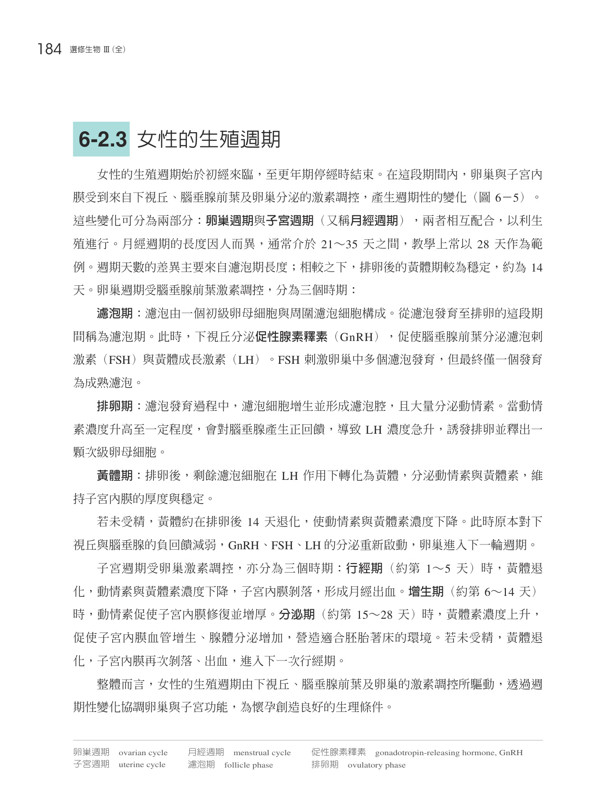
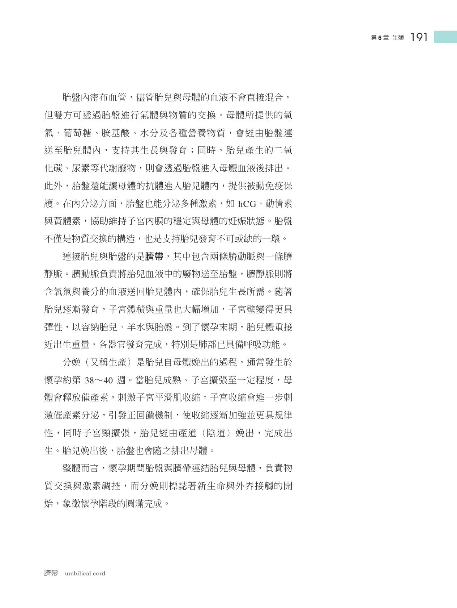
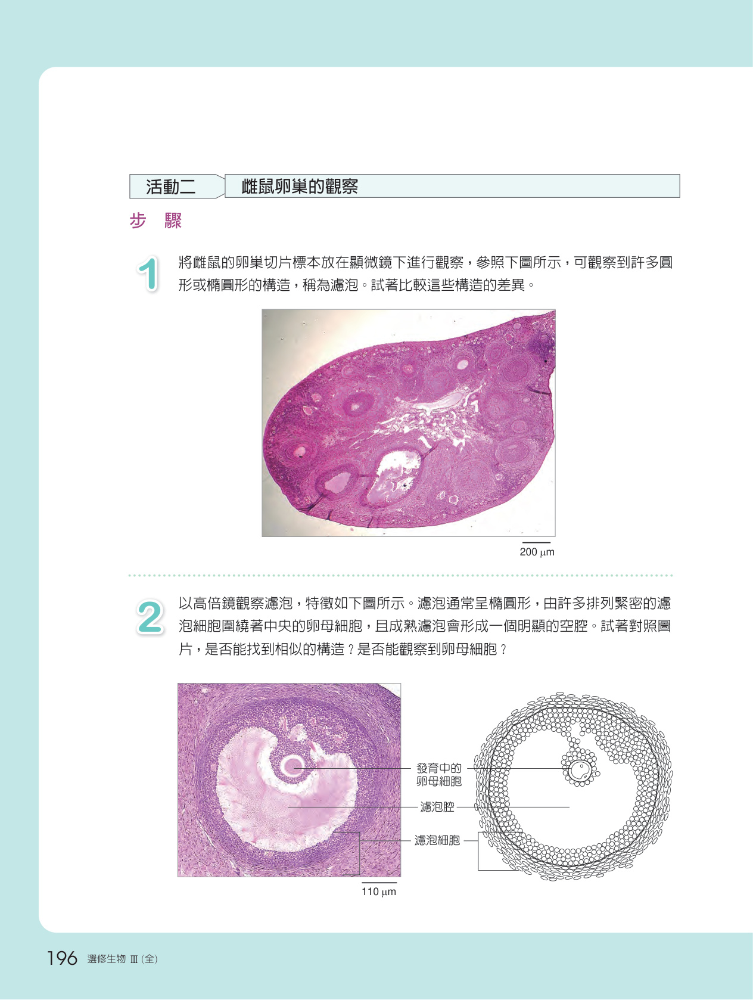
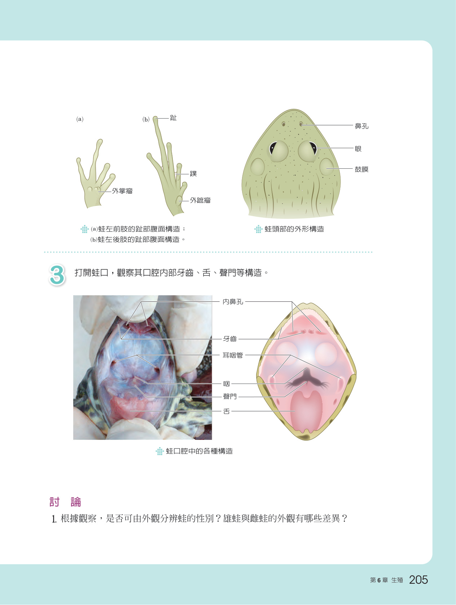
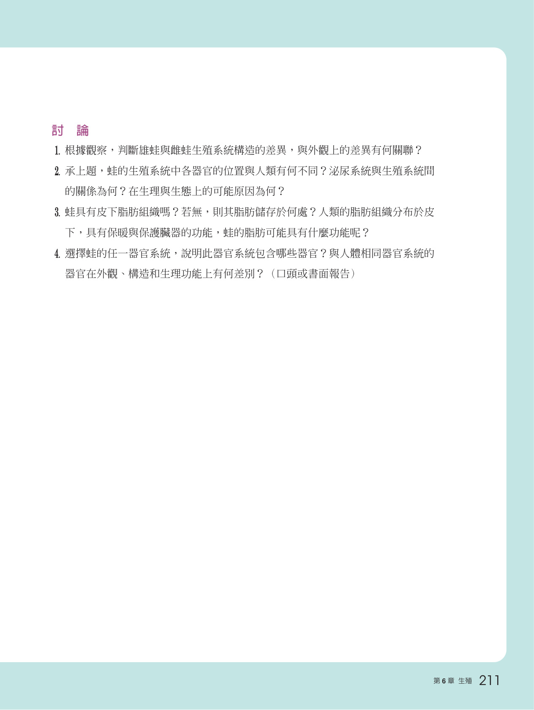

涵蓋男女生殖系統解剖、減數分裂精卵生成、月經與卵巢週期、受精卵裂，以及胚胎三胚層分化與母胎胎盤物質交換歷程。
剖析男性睪丸、副睪、輸精管及女性卵巢、輸卵管、子宮等內外生殖器官構造與生理功能。

精卵生成減數分裂歷程對比，解析 FSH、LH、動情素及黃體素調控之卵巢週期與子宮內膜週期。

探索精子獲能、頂體反應、透明帶穿透、皮質顆粒反應阻斷多精入卵及核融合過程。

解析卵裂、桑椹胚、囊胚著床、羊膜胚盤三胚層分化、胎盤臍帶形成及分娩泌乳調控歷程。

以高倍顯微鏡觀察睪丸曲細精管切片及卵巢濾泡切片，精準辨識各發育階段配子形態。
跨領域探討生殖醫學輔助生殖科技（ART）應用、代孕倫理思辨與現行法規權益爭議。

藉由經典兩生類青蛙解剖，全面觀察消化、呼吸、循環、泌尿與生殖系統之比較解剖構造。